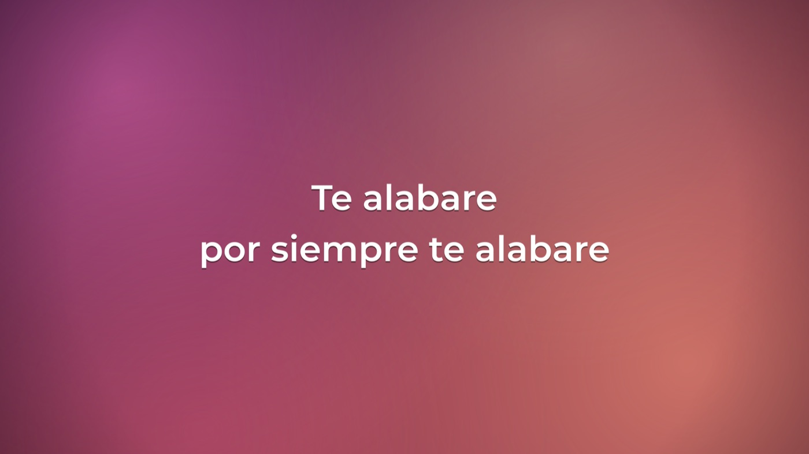

01
Cantos y coros
Pegás la letra y cada párrafo es una diapositiva. Ponés [Coro] y en vivo saltás con la tecla
C. Fondo por canto o por diapositiva: degradados, imagen o video en bucle.
- Vista previa exacta mientras escribís
- C coro · P puente · 1–9 estrofas · B ocultar
- Tercio inferior sobre la cámara para la transmisión
